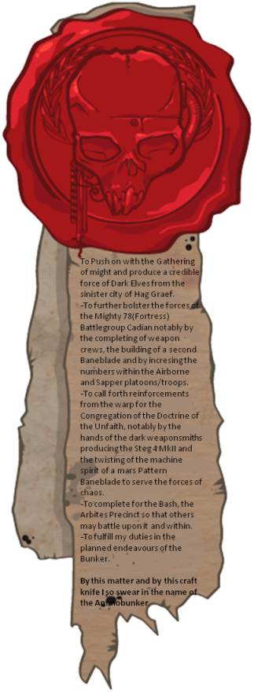

Who We Are
With passion, care, and determination, The Warhammer Museum is dedicated to the collection, preservation, and interpretation of Warhammer miniatures and their associated visual culture. Through exhibition and display, the museum presents figures, vehicles, and constructed scenes as objects of craftsmanship, design, and material practice.
Miniature making is at the heart of this museum. Every figure is built, painted, and shaped through time, patience, and personal choice. These works are more than representations of a fictional world. They carry the mark of the people who made them, in every brushstroke, every detail, and every decision along the way.
By bringing Warhammer into a museum setting, we create a space where these miniatures can be seen differently. Visitors are invited to slow down, look closely, and appreciate the care behind each piece. Whether you are a long-time hobbyist or encountering Warhammer for the first time, the museum offers a place to explore, learn, and enjoy these works as part of a shared creative culture.
We invite you to take your time here. Look closely, notice the details, and enjoy each piece for what it is. These miniatures are not just part of a story. They are built, painted, and brought to life by hand, shaped by the people who care about them. Whether you are here out of curiosity or deep passion, this is a place to explore, appreciate, and share in that experience.

To present, care, and share Warhammer miniatures as objects of visual culture, craftsmanship, and curated interpretation.
Principles That Guide the Museum
At the heart of this museum is the community that makes it possible.
- Community and Craft: Every miniature begins in someone’s hands. Built and painted by hobbyists around the world, each piece reflects time, care, and creativity. Without this community, there would be no collection.
- Care and Respect: Each object is treated as a work shaped by its maker. It is presented with attention and respect.
- Clarity and Access: The museum is easy to explore. Information is kept clear so all visitors can navigate it comfortably.
- Shared Experience: This is a space shaped by a shared passion. Whether you are new or experienced to Warhammer, you are welcome here.